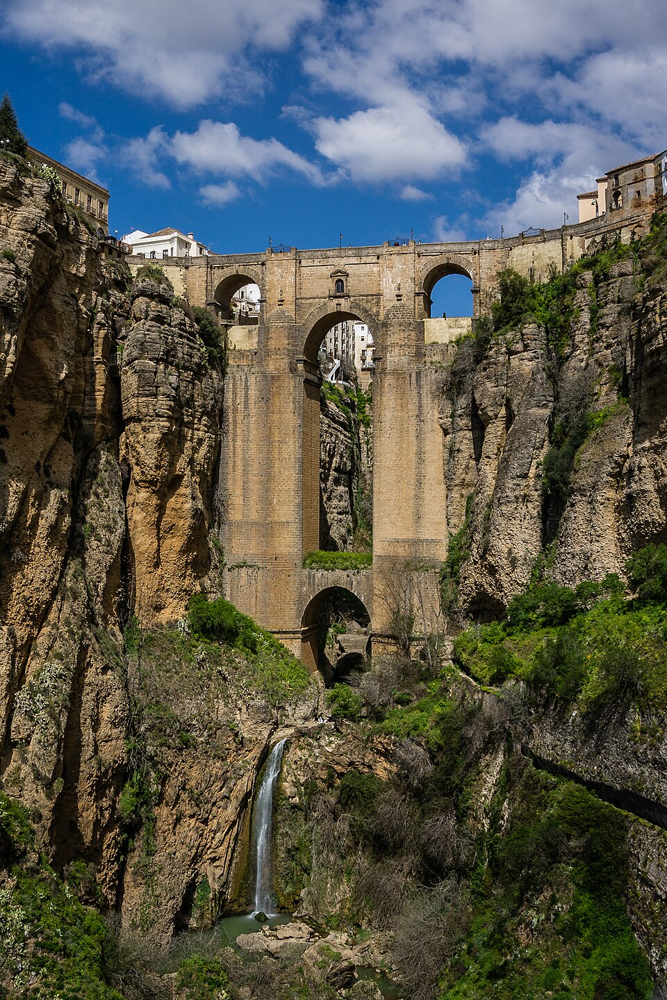
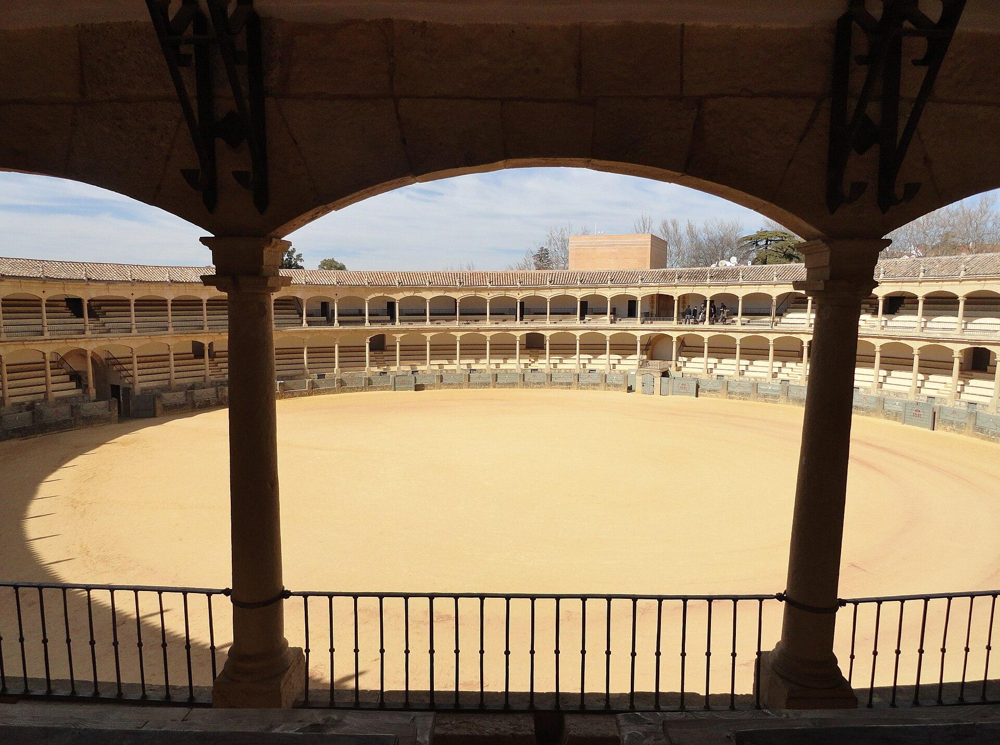
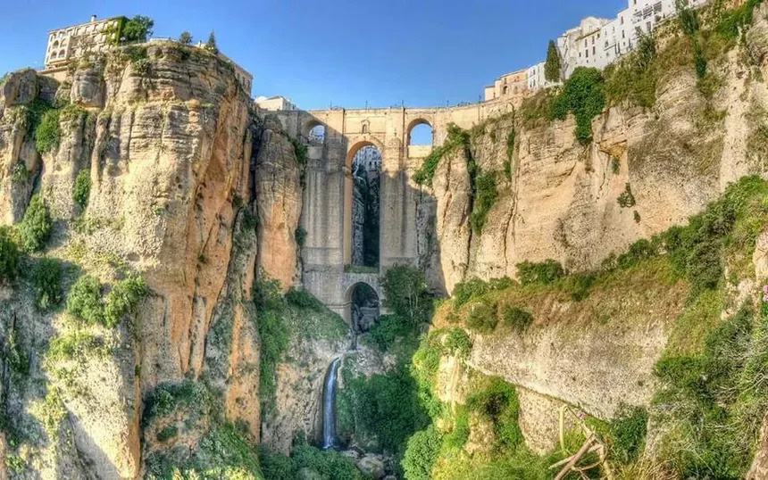
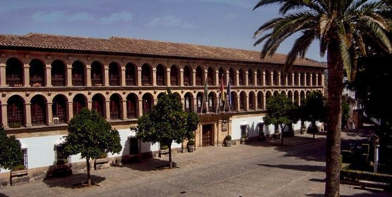
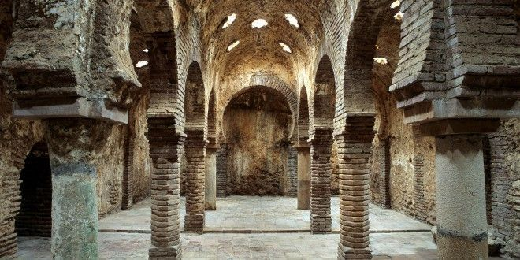
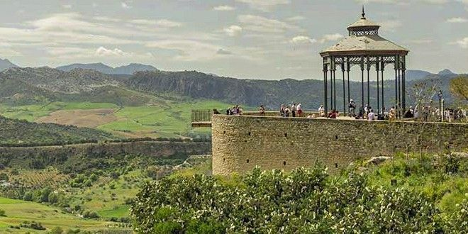

Galería multimedia de Ronda
Recorre Ronda a través de imágenes, vídeos y sonidos. Todo el contenido cuenta con alternativas textuales, subtítulos y transcripciones para garantizar el acceso a toda la ciudadanía.
Imágenes
Selección de fotografías representativas de los lugares más emblemáticos de Ronda.
-

Puente Nuevo Símbolo de Ronda y obra maestra del siglo XVIII. Construido entre 1751 y 1793. -

Plaza de Toros La plaza de toros más antigua de España, inaugurada en 1785. -

El Tajo Garganta natural de 100 metros de profundidad excavada por el río Guadalevín. -

Casco antiguo Las callejuelas blancas de la antigua medina musulmana. -

Baños Árabes Los baños árabes mejor conservados de la Península Ibérica (siglo XIII). -

Serranía de Ronda Naturaleza, olivares y rutas de senderismo por la sierra malagueña.
Vídeo: Ronda desde el aire
Vídeo de presentación con imágenes aéreas de Ronda. Incluye subtítulos en español que se pueden activar pulsando el icono CC del reproductor. Más abajo encontrarás también la transcripción completa.
Ver transcripción completa del vídeo
[Música suave de guitarra española]
Narrador: Bienvenidos a Ronda, una ciudad suspendida sobre el cielo de Andalucía.
[Plano aéreo del Puente Nuevo]
Narrador: Construido en el siglo XVIII, el Puente Nuevo une los dos lados de la ciudad sobre una garganta de cien metros de profundidad.
[Plano de la Plaza de Toros]
Narrador: Aquí, en la plaza de toros más antigua de España, nació la escuela rondeña del toreo.
[Vista panorámica del valle]
Narrador: Olivares, viñedos y montañas se extienden hasta el horizonte, formando un paisaje único en Europa.
[Calles del casco antiguo]
Narrador: Caminar por las calles de la antigua medina es viajar al pasado, entre casas encaladas y patios floridos.
Narrador: Ronda te espera. Ven a vivirla.
[Música finaliza]
Audio: Sonidos de la Feria de Ronda
Grabación ambiental de la Feria de Pedro Romero, celebrada cada septiembre en honor al maestro torero rondeño. Incluye transcripción descriptiva del audio.
Ver transcripción descriptiva del audio
[0:00 - 0:15] Suenan las campanas de la Iglesia de Santa María la Mayor anunciando el comienzo de la feria.
[0:15 - 0:45] Voces alegres y conversaciones de la multitud paseando por las calles. Se distinguen risas de niños y niñas.
[0:45 - 1:30] Empieza a sonar una sevillana interpretada con guitarra y palmas. Voces cantando al unísono.
[1:30 - 2:00] Sonido de cascos de caballos y carruajes recorriendo las calles empedradas durante el paseo de enganches.
[2:00 - 2:30] Aplausos del público en la Plaza de Toros, seguidos del característico clarín que anuncia el inicio de la corrida goyesca.
[2:30 - 3:00] La música y el bullicio se desvanecen lentamente.
Mapa de la ciudad
Plano esquemático de Ronda con los principales puntos de interés. Pulsa los enlaces para más información sobre cada lugar.